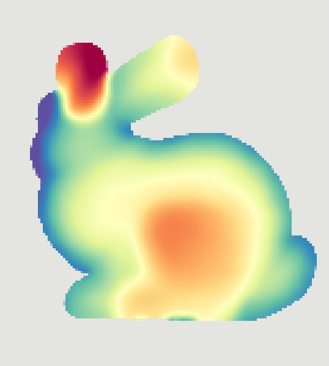
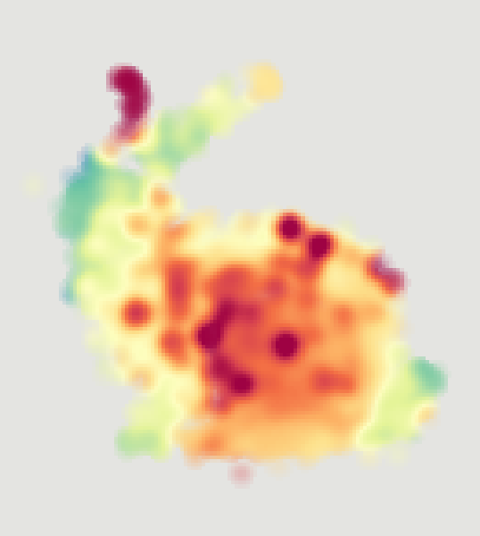
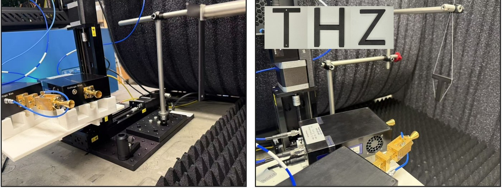
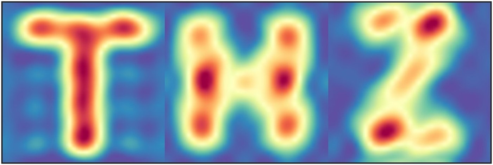
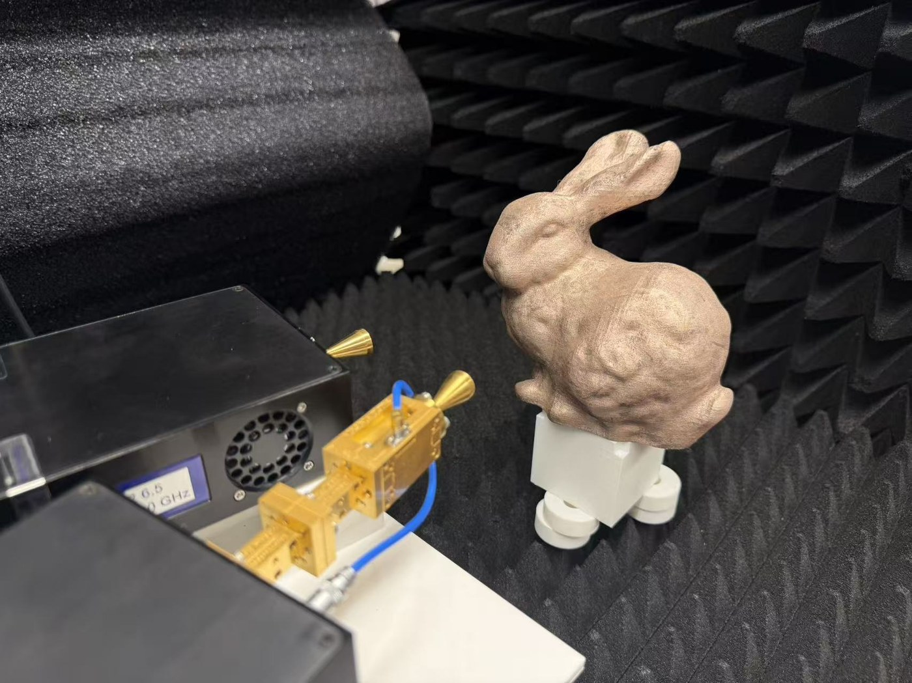
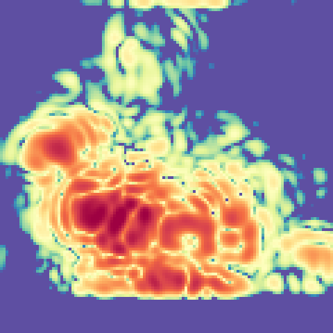

Abstract
We present Dirichlet Splatting, a physically grounded differentiable rendering method for inverse problems with wave-based coherent sensors. Unlike optical cameras, these sensors observe a scene in a band-limited Fourier space whose continuous point response is complex-valued and oscillatory. Our key observation is that the point spread function of a reflector in this Fourier space is the Dirichlet kernel, not a Gaussian. We instantiate each splat as a Dirichlet kernel in closed form, model each primitive as a planar surfel rendered through a surfel-aware Dirichlet splat whose complex amplitude is set by wave propagation physics, and introduce a sliding Frank–Wolfe adaptation tailored to the rugged, non-convex landscape that the Dirichlet oscillation induces. On terahertz tomography, Dirichlet Splatting recovers reflector geometry with an order of magnitude fewer parameters, faster convergence, and higher accuracy than 3D Gaussian Splatting.
Key Insights
Splatting primitives should be derived from the underlying image-formation physics. In coherent sensing modalities such as radar and sonar, a point reflector modeled as a finite-length complex exponential produces a Dirichlet point-spread function under a rectangular-window DFT. Extending splatting to new sensing modalities calls for primitives that capture how each sensor forms an image, including its point-spread function and the way signals combine.
Dirichlet Point-Spread Function
For a point reflector whose sampled response is a finite-length complex exponential, a rectangular-window discrete Fourier transform (DFT) yields the Dirichlet point-spread function. In bin units, the response at offset \(\Delta\) is
where \(N\) is the DFT window length and \(\Delta\) is the difference between the evaluation coordinate and the continuous reflector center. The response is complex-valued, oscillatory, and periodic. For a rectangular window, approximately 10% of the continuous spectral energy lies outside the main lobe. The sidelobe ratio and phase law are determined by \(N\) and require no fitting. A Gaussian envelope has no zero crossings and does not reproduce the Dirichlet sidelobe structure or its offset-dependent phase.
The offset control translates the reflector between adjacent DFT bins. At an integer-bin center, the non-peak samples coincide with kernel zeros. At a half-bin offset, the sampled response includes sidelobes. Dots indicate the sampled complex response, with color encoding phase.
- Dirichlet kernel (Ours)
- Gaussian with the same main lobe
- Recorded bins, colored by phase
- Recorded energy outside the main lobe, Dirichlet (Ours)
- –
- Same for the Gaussian
- –
- Brightest recorded sample
- –
Coherent Compositing
The renderer forms the complex spectral tensor by coherent addition, \(\hat Y(\mathbf f) = \sum_i \mathrm{splat}_i(\mathbf f)\). The corresponding power is \(|\hat Y|^2\). This additive compositing rule requires neither depth ordering nor opacity and permits parallel evaluation across surfels. Interference depends on the relative phases of the complex contributions. In the separable 2D model, the per-axis sidelobes produce a lattice in the spectral response.
The radial indicator on each reflector represents its phase. Adjusting a reflector phase changes the coherent interference pattern. Both panels use identical reflector positions and complex amplitudes.
Reflector 1 of 3
Surfel-Aware Dirichlet Splat
We represent the scene as planar surfels. Each surfel contributes a separable Dirichlet kernel multiplied by a complex amplitude. The amplitude incorporates the surfel appearance factors, while the rectangular-window kernel is determined by the per-axis FFT lengths.
Here \(S\) is the number of surfels and \(L\) is the number of measurement axes. The quantities \(\alpha_i\), \(A_i\), \(V_i\), \(F_i\), and \(R_i^{-\gamma}\) denote complex reflectivity, disk area, bistatic foreshortening, Fresnel response, and free-space spreading, respectively. The exponent \(\gamma\) specifies the path-loss model. The Fourier center \(\mu_{i,\ell}\) maps the surfel position and velocity to axis \(\ell\), such as range, Doppler, or azimuth. The function \(d_{N_\ell}=\kappa_{N_\ell}/N_\ell\) is the unit-peak kernel. Velocity enters through the Doppler offset under the coherent-sensing assumptions stated in the paper, including constant radial velocity and negligible range walk.
This simulation illustrates the dependence of the complex response on surfel orientation, material, area, and propagation distance. Rotation changes the foreshortening factor \(V\). The glass preset uses a relative wave impedance of \(1/1.5\), giving a Fresnel coefficient of −0.2 at normal incidence. At 120 GHz, a 1.25 mm change in monostatic range produces a full round-trip phase cycle. The range–angle map simulates a 16-element receive array using range-domain responses and angular beamforming. Rings indicate the true surfel positions.
Amplitude of the selected surfel
- Coherent sum \(|\hat Y|\) along range
- One surfel's splat
A Dirichlet surfel has 13 degrees of freedom, including velocity and complex material impedance, compared with 58 for the degree-3 spherical-harmonic 3DGS representation. The appearance parameterization contributes much of this difference: Dirichlet Splatting uses a scalar complex reflectivity and material response rather than directional RGB spherical-harmonic coefficients.
| Attribute | 3D Gaussian splat | # | Dirichlet surfel (Ours) | # |
|---|---|---|---|---|
| Position | \(\mathbf p\in\mathbb R^3\) | 3 | \(\mathbf p\in\mathbb R^3\) | 3 |
| Orientation | unit quaternion | 3 | unit normal \(\mathbf n\in\mathbb S^2\) | 2 |
| Extent | scale \(\mathbf s\in\mathbb R^3_{>0}\) | 3 | area \(A>0\) | 1 |
| Velocity | none | 0 | \(\mathbf v\in\mathbb R^3\) | 3 |
| Appearance | SH coefficients, degree 3 | 48 | complex amplitude \(\alpha\in\mathbb C\) | 2 |
| Opacity / material | opacity \(o\) | 1 | impedance \(\eta\in\mathbb C\) | 2 |
| Compositing | alpha blending | coherent additive sum | ||
| Total | 58 | 13 |
Forward Model Fidelity
On the synthetic three-reflector range profile in the paper, three Dirichlet primitives reproduce the reference response to the numerical floor (−120 dB magnitude normalized mean squared error, NMSE). A fixed-width Gaussian representation with 96 primitives reaches −30.1 dB, using 32× as many primitives. This experiment characterizes the representation mismatch between a Gaussian envelope and the finite-window DFT response.
The browser demonstration generates scenes with two to four complex reflectors and supports 1D range profiles and 2D spectra. The Gaussian primitive count is adjustable. Gaussian centers and widths are optimized by Levenberg–Marquardt, with real signed weights determined by least squares. The Dirichlet fit uses one primitive per reflector, with residual-certificate placement and local refinement. Both fits are evaluated by magnitude NMSE. This free-width Gaussian demonstration differs from the fixed-width comparison reported above. Dots indicate primitive centers.
- Ground truth
- Dirichlet fit (Ours)
- Gaussian fit
- Dirichlet (Ours) NMSE
- –
- Dirichlet (Ours) parameters
- –
- Gaussian NMSE
- –
- Gaussian parameters
- –
The same per-axis kernel applies to Doppler measurements. The joint position–velocity model represents radial velocity as a continuous Doppler-bin offset under the coherent-sensing assumptions stated in the paper.
Dirichlet Sliding Frank–Wolfe
The Dirichlet sidelobes induce local minima in the reconstruction objective. A rectangular window has a first sidelobe level of approximately −13 dB. In the paper's cold-start benchmarks, local gradient optimization can converge to sidelobe minima rather than the true reflector centers.
Dirichlet Sliding Frank–Wolfe (DSFW) addresses three optimization difficulties: sidelobe minima, amplitude shrinkage, and inter-splat coupling. Joint amplitude and position optimization can reduce the residual by decreasing the amplitude of a misplaced splat. Coherent interference also couples nearby center variables, introducing off-diagonal curvature that diagonal preconditioners do not represent. DSFW combines the following operations:
- Variable projection. The forward model is linear in the complex amplitudes. For fixed centers, we solve \(\mathbf b^\star = (G + \lambda I)^{-1} q\) and optimize the reduced objective over centers. Here \(G\) is the normalized dictionary Gram matrix, \(q\) is the normalized dictionary correlation with the measurements, and \(\lambda\) is the ridge weight. This elimination removes amplitudes from the nonlinear search.
- Residual certificate. We evaluate \(s(\mathbf x) = |\langle a(\mathbf x),\, \mathbf y - A\mathbf b^\star\rangle| / \|a(\mathbf x)\|\) across the candidate grid. Here \(a(\mathbf x)\) is the spectral response of a candidate primitive, \(A\) is the current response dictionary, and \(\mathbf y\) contains the measurements. The normalized residual correlation identifies candidate locations beyond the current local basin.
- Hard replacement. The lowest-utility primitive is replaced at the certificate maximizer. Utility combines relative amplitude with a measure of the contribution not represented by neighboring primitives. Replacement preserves the primitive budget and limits support growth into sidelobes and noise.
- Sliding. Optional Levenberg–Marquardt refinement updates the centers jointly. The paper also applies periodic coupled low-resolution corrections, accepted when the full-resolution loss decreases. DSFW does not carry a general convergence guarantee.
The browser comparison initializes both optimizers with the same random centers and a primitive budget exceeding the reflector count by two. A reflector is counted as recovered when a primitive lies within 0.1 bin of its position. Primitive positions can be adjusted during optimization to compare subsequent updates. The Certificate view displays the candidate-location scores used by DSFW. These simplified browser implementations illustrate the optimization mechanisms.
- AdamW, 800 steps
- DSFW (Ours), 40 outer steps
- AdamW
- –
- DSFW (Ours)
- –
- AdamW, 900 steps
- DSFW (Ours), 24 outer steps
- AdamW
- –
- DSFW (Ours)
- –
Results
3D Reconstruction


Ours Ground truthWe fit a single surfel set jointly to the raw complex range profiles of five views of a synthetic Stanford bunny. The foreshortening factor \(V_i\) provides per-view attenuation, allowing joint fitting without a separate visibility solver in this model. Color encodes depth along each viewing axis.
The comparison slider displays the reconstructed and ground-truth depth maps for the selected view.
Real Sub-THz Measurements
We evaluate the method on three metal-letter scans acquired with a custom 120 GHz software-defined radio. The reconstruction preserves the separated letter structures while reproducing the measured finite-window sidelobes.




We also evaluate the method on a 3D-printed Stanford bunny coated with conductive ink and scanned with the same transceiver. A dense field of Dirichlet atoms with fixed lattice centers is fitted to the raw complex range profiles using the same kernel, forward model, and loss. The displayed reconstruction shows the recovered support.
BibTeX
@article{chen2026dirichlet,
title = {Dirichlet Splatting: Differentiable Rendering for Wave-Based Inverse Problems},
author = {Chen, Xingyu and Zhao, Wuqiong and Zhang, Xinyu and Li, Tzu-Mao},
journal = {ACM Transactions on Graphics},
volume = {45},
number = {6},
articleno = {199},
year = {2026},
month = dec,
doi = {10.1145/3842559}
}